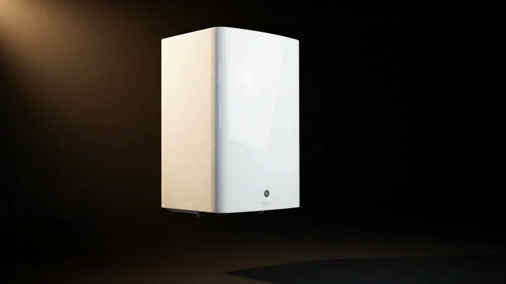

Arıza onarımı
Yanmıyor, basınç düşüyor, su akıtıyor… Usta sorunu yerinde bulur, çoğu arızayı aynı ziyarette giderir. Parça gerekiyorsa fiyatı önce söyler.
Yerinde süre: 30–60 dk

Kombiniz yanmıyorsa ya da bakım zamanı geldiyse arayın; gününü ve saatini birlikte ayarlayalım.
Kombinin içini biz biliriz.
Dört işin dördü de kendi ustamızla. Fiyat, işe başlamadan söylenir ve onayınız alınır.
Yanmıyor, basınç düşüyor, su akıtıyor… Usta sorunu yerinde bulur, çoğu arızayı aynı ziyarette giderir. Parça gerekiyorsa fiyatı önce söyler.
Kış gelmeden temizlik ve kontrol. Bakımlı kombi daha az gaz yakar, kışın ortasında sizi yarı yolda bırakmaz.
Eski kombinin sökümü, yenisinin takılması ve gaz açılışı için gereken işlemler. Marka seçerken fiyat ve daire büyüklüğüne göre yol gösteririz.
Petekler alttan ısınıp üstte soğuk kalıyorsa içi çamurlanmış demektir. Makineyle yıkıyoruz; petekler yeniden eşit ısıtıyor.
Arayın ya da arıza kaydı bırakın. Sorunu bir iki cümleyle anlatmanız yeter; hata kodu görüyorsanız yazın.
Sizi arayıp günü ve saati birlikte belirliyoruz. Usta gelmeden önce telefonla haber verir.
Sorunu yerinde bulur, fiyatı işe başlamadan söyler. Onay vermeden hiçbir işlem yapılmaz.
"Kombi akşam arıza verdi, ertesi sabah geldiler. Fiyatı işe başlamadan söylediler, söyledikleri neyse onu aldılar."
"Petek temizliği yaptırdık, arka odadaki petek yıllardır ısınmıyordu, şimdi hepsi aynı ısıtıyor."
"Bakım için aradım, telefonda gün verdiler, geldikleri saate de uydular. Temiz çalışıyorlar."
Yorumlar örnektir; gerçek sitede Google yorumlarınız gösterilir.
| Pazartesi | 08:00–21:00 |
| Salı | 08:00–21:00 |
| Çarşamba | 08:00–21:00 |
| Perşembe | 08:00–21:00 |
| Cuma | 08:00–21:00 |
| Cumartesi | 08:00–21:00 |
| Pazar | 10:00–18:00 |
Formu doldurun, sizi arayıp saat verelim. Acilse beklemeyin, doğrudan arayın: 0555 000 00 00.